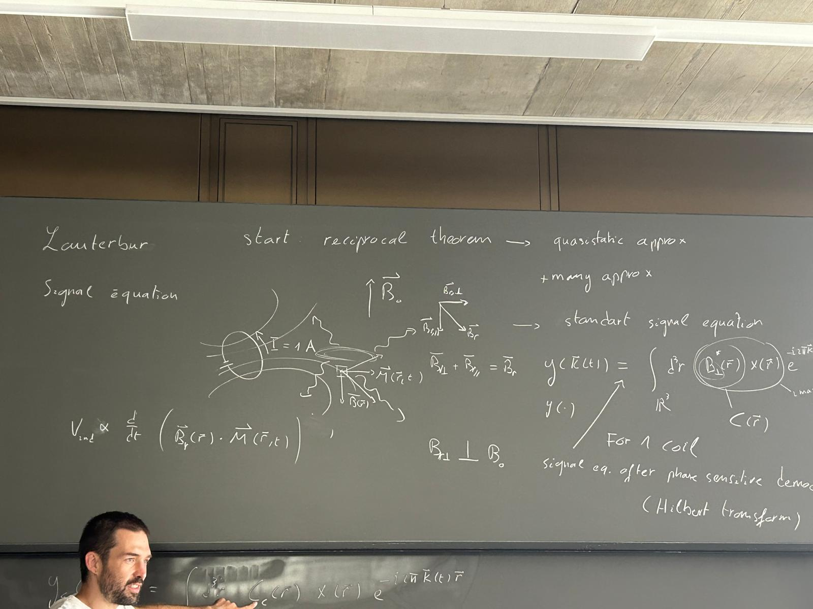

MRI Reconstructions¶
From the Theory to the Implementation¶
{kind=link}
The Monalisa toolbox for MRI reconstruction has been originaly developed at CIBM-CHUV between 2018 and 2023 by Bastien Milani. It continued to evovled until now, notably by the contribution of Berk Can Açikgöz who contributed with 2D and 3D GRAPPA reconstructions while working in QIS lab at Inselspital and university of Bern.
Originally, the development of the toolbox began by the implementation of non-cartesian reconstructions. The first reconstruction implemented was a gridded reconstruction which is part of the static non-iterative familly. After that, some static iterative reconstruction were added and later 3D-CINE iterative reconstruciton were implemented (4D and 5D), all for non-cartesian data. Iterative 3D-CINE reconstruction for cartesian data were then implemented on the same model. In order to be able to compare all kind of reconstructions, it would be ideal to have one example of each main representant. Thank to Berk we have now a GAPPA implementation, which is one of the most used static non-iterative reconstruction for partially sample cartesian data.